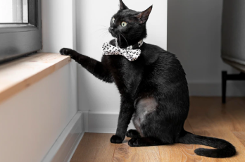

熱門文章
-
你屬「喵星人」嗎？ 越南特有十二生肖「貓」取代「兔」
兔年即將到來，台灣燈會的「兔」年燈飾，已經提早亮相，不過您知道嗎？在越南的文化裡，竟然沒有兔年，而是「貓」年，相傳是因為12生肖傳入越南時，子丑寅卯的「卯」字，發音像貓，因此誤傳至今，不過真的是這樣嗎？來聽越南人怎麼說...

-
貓狗大戰一觸即發，同居準則大公開！｜專業獸醫—李道絨
很多喜歡動物的飼主家中會同時飼養汪星人及貓星人，有時候還會認為讓家中的毛寶貝多一個伴可以排解寂寞、增加新朋友，但有時候我們都會忽略，對於新夥伴的加入，除了資源重新分配外還有許多特別要注意的事項，避免家中經常發生貓狗大戰！...

-

你的貓跟你越來越像？科學研究：貓咪行為可以看出主人性格
寵物行為專家 Lauren Finka 在調查訪問了超過 3,300 名貓咪飼養者後，在美國公共科學圖書館出版的學術期刊《PLOS One》上發表了研究成果。結果表明，貓主人的性格、養育方式與貓咪的行為甚至健康之間有緊密關聯。她以心理學著名的「人格五因素模型（five-factor model）」為基準，整理出貓咪行為與飼養者的性格、教養方式三者之間的關聯...